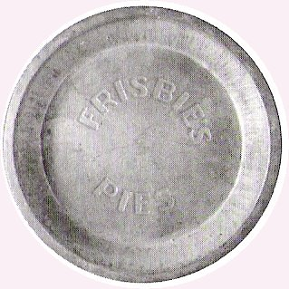
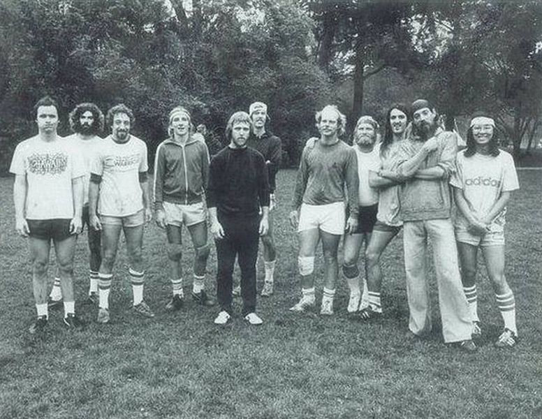

Los orígenes del Frisbee se remontan a California, EEUU, a principios del siglo XX, cuando grupos de jóvenes de la localidad de Bridgeport tenían como pasatiempo tirarse unos a otros los moldes de las tartas fabricadas por la empresa Frisbie Pie Companie.

Foto de Doug Coldwell disponible en Wikimedia CommonsPosteriormente esta práctica se popularizó por parte de los soldados en las bases militares durante la segunda guerra mundial.
En 1948 Walter Frederick Morrison decidió diseñar un disco volador de plástico que soportara mejor los golpes y sirviera específicamente para jugar con él. De aquí en más se comenzó a mejorar diseño de los discos hasta que en el año 1968, se presentó por primera vez la idea de Ultimate Frisbee al consejo estudiantil de Columbia High School en Nueva Jersey, EEUU.
En los inicios solamente se marcaban las líneas de gol. El primer reglamento fue escrito en 1970 por Joel Silver, Buzzy Hellring y Jon Hines. A continuación, el deporte se extendió por distintas universidades de EEUU hasta que en 1975 se organizó el primer torneo.

Foto de Audra454 disponible en Wikimedia Commons{kind=link}
El deporte continuó creciendo y hoy en día existe una federación mundial que regula el deporte, WFDF (World Flying Disc Federation) nuclea a casi 100 países entre los que se incluye a Uruguay.
¿Cómo llega el deporte a nuestro país?
En el año 2009 un grupo de jóvenes que realizaban actividades de ayuda social en el oeste de Montevideo invitan a Braden Mogler un estadounidense que propone jugar Ultimate Frisbee.
Braden se juntaba con amigos de su país en las playas de Montevideo a jugar Ultimate o lanzar el disco.
Luego a través de redes sociales, Braden junto a jóvenes de nuestro país comenzaron a difundir el deporte en Uruguay realizando encuentros semanales para su enseñanza.
Comenzó a crecer no sólo en Montevideo sino también en el interior del país. Se realizaron contactos con Federaciones y comunidades que practicaban Ultimate Frisbee en la región con el propósito de difundirlo a más jugadores.
Actualmente hay equipos de Ultimate Frisbee en distintos puntos del país y se realizan torneos donde cada vez es practicado por más personas.
Sitios oficiales del deporte en Uruguay:
https://www.youtube.com/channel/UCK3uV0Cym8RD34chIi7aiBg/videos
Primer campeonato ultimate frisbee en Uruguay año 2010.
Video tomado de youtube

_(6039790846).jpg)